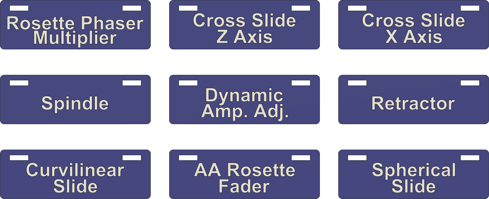

|
|
Cable Marking Plates
|  Cable Marking Plates |
These are useful for attaching to the cables coming from the stepper motors at the end where they are plugged into the Rosetta box. This makes identifying which plug is which is easier.
These print each plate as 2” x ⅝”, and can be attached to the cable using small cable ties.
Printing Notes
- These should be printed with the text down. That gives the best, flattest surface for the plate’s surface which is seen.
|
|
Compatibility Notes
- They are provided as a 3mf file which is formatted for printing on a Bambu Lab printer with multiple filament support. This enables the text to be embedded into the front as a different color.
- These were tested on a Bambu Labs P1S with an AMS.